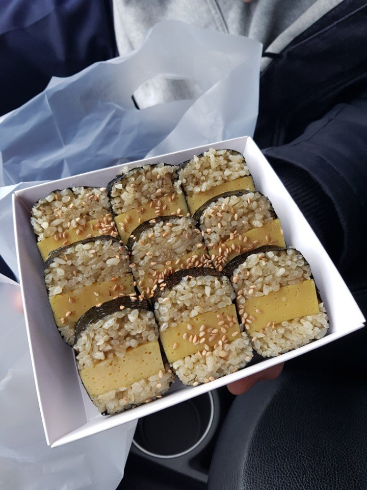

Korean street food is cheap, quick and easy to try even if you speak no Korean. Most stalls sell only one or two things, the food is cooking in front of you, and pointing works perfectly well. This guide lists the snacks you will see most often, where locals actually eat them, what a stall visit costs and how to order, pay and tidy up without fuss.
Where to find Korean street food
- Traditional markets. Gwangjang Market and Namdaemun Market in Seoul, or Gukje Market and the BIFF Square area in Busan, have rows of stalls with stools where office workers and grandparents eat side by side. Food here is usually better value than on tourist strips.
- Busy shopping streets. In Myeongdong, carts roll out from late afternoon and stay until the evening crowds thin out. Choice is huge and the snacks are photogenic, but prices are higher. Our Myeongdong night market guide covers what to expect there.
- Subway exits and university areas. A single tteokbokki or eomuk cart near a station exit is the most ordinary kind of street food in Korea, and often the most satisfying.
- Bunsik shops (분식). Small sit-down snack restaurants near stations and schools that serve the same foods all day, with a menu on the wall. They are the easy option when it is cold or raining, or when carts have not opened yet.
15 Korean street foods to try
Savoury classics
- Tteokbokki (떡볶이): chewy rice cakes simmered in a red gochujang sauce that tastes sweet first and spicy after. One portion is plenty to share. Rosé or cheese versions are milder.
- Eomuk or odeng (어묵 / 오뎅): sheets of fish cake folded onto a skewer and kept warm in broth. Take a paper cup and help yourself to the broth; on a cold night it is half the point.
- Sundae (순대): Korean blood sausage stuffed with glass noodles, usually sold with slices of liver and lung. Dip it in salt mixed with chilli powder, or in tteokbokki sauce.
- Twigim (튀김): fried vegetables, squid, sweet potato, boiled egg or glass-noodle dumplings rolled in seaweed (gimmari). Ask for them to be tossed in tteokbokki sauce.
- Gimbap (김밥): rice and fillings rolled in seaweed and sliced. Mayak gimbap, the small finger-sized rolls at Gwangjang Market, come with a mustard soy dip.
- Bindaetteok (빈대떡): a thick, crisp mung bean pancake fried in plenty of oil, the signature snack of Gwangjang Market. Good with a bottle of makgeolli.
- Dakkochi (닭꼬치): grilled chicken skewers brushed with a sweet soy or spicy sauce. Ask for the soy one (간장, ganjang) if you avoid heat.
- Korean corn dog (핫도그): a sausage, mozzarella or both on a stick, coated in batter, sometimes rolled in diced potato, then fried and dusted with sugar. Add ketchup or mustard yourself.
- Tornado potato (회오리감자): one potato cut into a spiral on a long stick, fried and seasoned with cheese or onion powder.
Sweet snacks
- Hotteok (호떡): a fried pancake filled with brown sugar syrup, cinnamon and sometimes seeds (ssiat hotteok, a Busan speciality). The syrup is scalding, so let it cool for a minute and hold the paper cup underneath.
- Bungeoppang (붕어빵): a fish-shaped waffle filled with red bean paste or custard cream, sold mostly from late autumn to early spring. Locals often buy a small paper bag of them on the way home.
- Gyeranppang (계란빵): a small, slightly sweet bread loaf baked with a whole egg on top. Filling and good for breakfast on the move.
- Dalgona (달고나): a thin disc of burnt sugar and baking soda stamped with a shape. More of a nostalgic novelty than a snack.
- Tanghulu (탕후루): fruit such as strawberries or grapes on a skewer under a hard sugar shell. Its peak craze has passed, but you will still see it.
- Gun-goguma (군고구마): whole sweet potatoes roasted in a drum stove, a winter street smell many Koreans associate with childhood.
For proper sit-down meals as well as snacks, see our list of 20 Korean dishes to try on a first trip.

How buying works
- Check the board. Most stalls have a price board, often with pictures. Point at the item and hold up fingers for how many you want.
- Know the self-service items. Eomuk and twigim are often help-yourself: take skewers or pieces, keep the empty sticks, and tell the vendor how many you had when you pay. They usually count the sticks.
- Pay. Many stalls take cards and some show a QR code for bank transfer, which visitors usually cannot use. Small carts may prefer cash, so keep ₩1,000 notes and a few coins. Our cash and cards guide explains what to carry.
- Eat at the stall. Standing at the counter or perching on a stool is normal. Walking while eating is fine at markets but awkward in crowds, and sauces drip.
Useful words: igeo juseyo (이거 주세요, "this one, please"), hana / dul (one / two), an maepge (안 맵게, "not spicy"). Our guide to ordering Korean food has more.
What it costs
Street food is still one of the cheapest ways to eat in Korea, but prices have risen and vary a lot by location. As a rough guide in 2026, a single item such as a fish cake skewer, a hotteok or a small bag of bungeoppang costs from about ₩1,000 to ₩3,000, while a portion of tteokbokki or a plate of twigim is a few thousand won more. Myeongdong and other tourist strips charge noticeably more than neighbourhood markets, and a novelty snack there can cost as much as a simple restaurant meal. Three or four items make a full, cheap dinner.
Dietary notes
Many sauces and broths contain fish, anchovy or meat stock, and labels are usually only in Korean. Tteokbokki sauce and eomuk broth are rarely vegetarian; sweet snacks such as hotteok, bungeoppang and gun-goguma are the safest bets. Wheat and soy are in almost everything, so street food is hard for coeliacs. If you have an allergy, show it written in Korean. Our vegetarian food guide has more on what to look for.
Good to know
- Stalls open and close at the owner's pace and many skip bad weather. Evenings and weekends are the most reliable times; check Naver Map or KakaoMap for market stalls and bunsik shops before making a special trip.
- Winter is the best street food season: hotteok, bungeoppang, gun-goguma and steaming eomuk all appear when it gets cold.
- A stall with a queue of locals turns food over fastest, so it is fresher.
- Convenience stores are the backup when stalls close: see our convenience store guide.
FAQ
What is the most popular Korean street food?
Tteokbokki is the one almost every Korean would name first, usually eaten with eomuk and twigim. In winter, hotteok and bungeoppang are just as popular.
Is Korean street food spicy?
Some of it is. Tteokbokki and spicy dakkochi have a real kick, but eomuk, gimbap, corn dogs, hotteok and bungeoppang are not spicy at all. Ask for "an maepge" (not spicy) where there is a choice.
Can I pay by card at street food stalls?
Often yes, especially at markets and in Myeongdong, but not everywhere. Small carts may only take cash, so carry a few ₩1,000 notes and some coins.